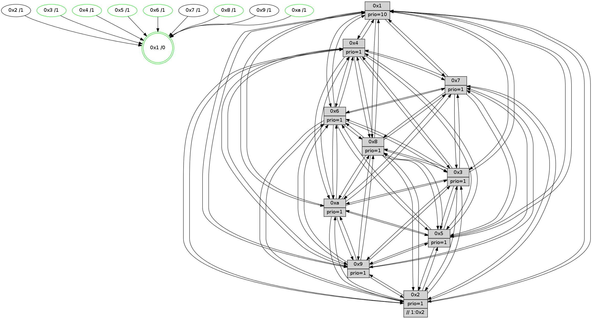

>> << IDX [start] -100 -25 -5 +0 +5 +25 +100 [1000.56679606]
 Previous packets
----------------------------------------------------------------------
995.049885 beacon01(faad) #0 coord=01,02,03,04,05,06,07,0a,09,08 cycle=688.0ms assoc
-- color-indic=1 64 0a bd
995.059868 beacon02(faad) #0 coord=01,02,03,04,05,06,07,0a,09,08 cycle=688.0ms assoc 64 99 8c
995.069867 beacon03(faad) #0 coord=01,02,03,04,05,06,07,0a,09,08 cycle=688.0ms assoc 64 e3 c1
995.079867 beacon04(faad) #0 coord=01,02,03,04,05,06,07,0a,09,08 cycle=688.0ms assoc 64 94 2b
995.089870 beacon05(faad) #0 coord=01,02,03,04,05,06,07,0a,09,08 cycle=688.0ms assoc 64 ee 66
995.099867 beacon06(faad) #0 coord=01,02,03,04,05,06,07,0a,09,08 cycle=688.0ms assoc 64 60 b1
995.109868 beacon07(faad) #0 coord=01,02,03,04,05,06,07,0a,09,08 cycle=688.0ms assoc 64 1a fc
995.119873 beacon0a(faad) #0 coord=01,02,03,04,05,06,07,0a,09,08 cycle=688.0ms assoc 64 6b f7
995.129873 beacon09(faad) #0 coord=01,02,03,04,05,06,07,0a,09,08 cycle=688.0ms assoc 64 e5 20
995.139873 beacon08(faad) #0 coord=01,02,03,04,05,06,07,0a,09,08 cycle=688.0ms assoc 64 9f 6d
995.151589 [Hello(2): seq=632 sym=4,5,7,6,3,9,8,10,1 sysInfo=hasWarning stat=4:3,11,7,6/5:2,8,9,2/7:5,0,5,9/6:14,13,13,9/3:12,0,11,5/9:0,12,15,5/8:6,10,9,9/10:8,0,15,10/1:10,0,3,1]
995.154510 [STC(8)->1 #0.137 tree-change,inconsistent-stability,stable,to-color d=1]
995.155741 [Hello(1): seq=545 sym=4,2,9,5,10,3,8,6,7 sysInfo=coloring-mode-on,ColoringModeRequestCalled stat=4:14,4,3,2/2:1,3,0,12/9:12,12,1,6/5:6,5,10,6/10:14,5,0,3/3:3,4,2,3/8:6,6,2,1/6:0,4,15,11/7:12,15,2,12]
995.158144 [STC(4)->1 #0.137 tree-change,inconsistent-stability,stable,to-color d=1]
995.159939 [Hello(3): seq=636 sym=1,7,6,2,4,8,9,10,5 sysInfo= stat=1:1,12,14,0/7:4,11,9,8/6:14,7,11,3/2:3,2,13,11/4:11,4,0,7/8:6,1,8,2/9:6,3,13,11/10:2,7,11,3/5:7,14,8,12]
995.162565 [Color(8) seq=269 @0:0 prio=1]
995.164131 [Hello(5): seq=636 sym=7,6,4,3,1,9,8,10,2 sysInfo=hasWarning stat=7:13,14,6,10/6:15,7,6,0/4:9,10,2,8/3:14,6,10,10/1:14,0,7,1/9:5,1,2,5/8:4,10,12,10/10:4,10,9,5/2:5,0,0,1]
995.166748 [STC(3)->1 #0.137 tree-change,inconsistent-stability,stable,to-color d=1]
995.168568 [STC(2)->1 #0.137 tree-change,inconsistent-stability,to-color d=1]
995.169974 [Color(3) seq=265 @0:0 prio=1]
995.171229 [STC(10)->1 #0.137 tree-change,inconsistent-stability,stable,to-color d=1]
995.172770 [STC(9)->1 #0.137 tree-change,inconsistent-stability,to-color d=1]
995.174141 [Color(10) seq=240 @0:0 prio=1]
995.184971 [Color(6) seq=268 @0:0 prio=1]
----------------------------------------------------------------------
995.838016 beacon01(faad) #0 coord=01,02,03,04,05,06,07,0a,09,08 cycle=688.0ms assoc
-- color-indic=1 64 b6 b8
995.847998 beacon02(faad) #0 coord=01,02,03,04,05,06,07,0a,09,08 cycle=688.0ms assoc 64 25 89
995.857998 beacon03(faad) #0 coord=01,02,03,04,05,06,07,0a,09,08 cycle=688.0ms assoc 64 5f c4
995.868000 beacon04(faad) #0 coord=01,02,03,04,05,06,07,0a,09,08 cycle=688.0ms assoc 64 28 2e
995.878000 beacon05(faad) #0 coord=01,02,03,04,05,06,07,0a,09,08 cycle=688.0ms assoc 64 52 63
995.888001 beacon06(faad) #0 coord=01,02,03,04,05,06,07,0a,09,08 cycle=688.0ms assoc 64 dc b4
995.898000 beacon07(faad) #0 coord=01,02,03,04,05,06,07,0a,09,08 cycle=688.0ms assoc 64 a6 f9
995.908004 beacon0a(faad) #0 coord=01,02,03,04,05,06,07,0a,09,08 cycle=688.0ms assoc 64 d7 f2
995.918004 beacon09(faad) #0 coord=01,02,03,04,05,06,07,0a,09,08 cycle=688.0ms assoc 64 59 25
995.928005 beacon08(faad) #0 coord=01,02,03,04,05,06,07,0a,09,08 cycle=688.0ms assoc 64 23 68
995.939535 [Hello(10): seq=569 sym=6,2,3,8,7,5,9,4,1 sysInfo=hasWarning stat=6:12,11,4,4/2:15,15,13,5/3:7,4,10,8/8:12,6,5,2/7:3,1,3,2/5:9,2,5,13/9:3,8,4,0/4:11,4,7,7/1:12,6,8,1]
995.943716 [Color(1) seq=317 @0:0 prio=10]
995.945911 [Hello(8): seq=580 sym=5,2,3,4,9,6,7,10,1 sysInfo=hasWarning stat=5:8,7,6,13/2:7,0,15,5/3:10,2,1,12/4:4,2,14,8/9:2,8,6,1/6:10,9,0,11/7:1,14,5,1/10:14,13,8,1/1:2,8,1,0]
995.948385 [Hello(9): seq=580 sym=2,5,3,4,7,6,8,10,1 sysInfo=hasWarning stat=2:7,7,0,3/5:14,8,14,4/3:8,11,14,12/4:3,10,11,7/7:3,9,15,9/6:9,6,6,9/8:0,1,1,3/10:7,12,3,1/1:4,6,4,1]
995.951139 [Hello(4): seq=636 sym=5,7,6,2,3,9,8,10,1 sysInfo= stat=5:4,7,15,12/7:8,4,1,8/6:15,12,12,10/2:5,5,10,10/3:11,10,12,8/9:4,9,5,8/8:15,12,4,3/10:4,4,7,10/1:1,8,5,1]
995.953828 [Hello(7): seq=636 sym=2,3,5,6,4,8,9,10,1 sysInfo=hasWarning stat=2:6,0,9,13/3:4,13,3,12/5:6,1,7,0/6:3,14,4,7/4:12,8,1,1/8:4,15,2,1/9:1,4,5,0/10:1,4,9,2/1:8,14,4,0]
995.963454 [Color(5) seq=271 @0:0 prio=1]
----------------------------------------------------------------------
996.626145 beacon01(faad) #0 coord=01,02,03,04,05,06,07,0a,09,08 cycle=688.0ms assoc
-- color-indic=1 64 72 b6
996.636128 beacon02(faad) #0 coord=01,02,03,04,05,06,07,0a,09,08 cycle=688.0ms assoc 64 e1 87
996.646130 beacon03(faad) #0 coord=01,02,03,04,05,06,07,0a,09,08 cycle=688.0ms assoc 64 9b ca
996.656127 beacon04(faad) #0 coord=01,02,03,04,05,06,07,0a,09,08 cycle=688.0ms assoc 64 ec 20
996.666129 beacon05(faad) #0 coord=01,02,03,04,05,06,07,0a,09,08 cycle=688.0ms assoc 64 96 6d
996.676129 beacon06(faad) #0 coord=01,02,03,04,05,06,07,0a,09,08 cycle=688.0ms assoc 64 18 ba
996.686130 beacon07(faad) #0 coord=01,02,03,04,05,06,07,0a,09,08 cycle=688.0ms assoc 64 62 f7
996.696134 beacon0a(faad) #0 coord=01,02,03,04,05,06,07,0a,09,08 cycle=688.0ms assoc 64 13 fc
996.706135 beacon09(faad) #0 coord=01,02,03,04,05,06,07,0a,09,08 cycle=688.0ms assoc 64 9d 2b
996.716133 beacon08(faad) #0 coord=01,02,03,04,05,06,07,0a,09,08 cycle=688.0ms assoc 64 e7 66
996.727937 [Hello(2): seq=633 sym=4,5,7,6,3,9,8,10,1 sysInfo=hasWarning stat=4:4,12,7,6/5:2,9,9,2/7:6,0,6,9/6:14,14,13,9/3:12,1,11,5/9:1,12,0,5/8:7,10,9,9/10:9,1,15,10/1:10,1,3,1]
996.730978 [Color(10) seq=241 @0:0 prio=1]
996.732635 [Hello(3): seq=637 sym=1,7,6,2,4,8,9,10,5 sysInfo= stat=1:1,13,14,0/7:5,11,9,8/6:14,8,12,3/2:4,2,13,11/4:12,4,0,7/8:7,1,9,2/9:7,3,14,11/10:3,8,12,3/5:7,15,8,12]
996.736435 [Color(3) seq=266 @0:0 prio=1]
996.738169 [Hello(5): seq=637 sym=7,6,4,3,1,9,8,10,2 sysInfo=hasWarning stat=7:13,14,6,10/6:15,8,6,0/4:9,11,2,8/3:14,7,11,10/1:14,0,7,1/9:5,1,3,5/8:4,10,12,10/10:5,11,10,5/2:5,0,1,1]
996.741870 [Hello(1): seq=546 sym=4,2,9,5,10,3,8,6,7 sysInfo=coloring-mode-on,ColoringModeRequestCalled stat=4:15,4,4,2/2:1,3,1,12/9:13,12,2,6/5:7,6,10,6/10:15,6,1,3/3:4,5,3,3/8:7,7,2,1/6:0,5,0,11/7:13,15,2,12]
996.744683 [Hello(6): seq=637 sym=2,3,5,4,7,9,8,10,1 sysInfo= stat=2:9,0,0,1/3:14,7,2,10/5:15,13,2,13/4:10,13,9,2/7:15,9,0,7/9:0,12,2,5/8:11,10,14,3/10:11,2,6,11/1:7,8,3,1]
996.747501 [Color(6) seq=269 @0:0 prio=1]
----------------------------------------------------------------------
997.414275 beacon01(faad) #0 coord=01,02,03,04,05,06,07,0a,09,08 cycle=688.0ms assoc
-- color-indic=1 64 ce b3
997.424257 beacon02(faad) #0 coord=01,02,03,04,05,06,07,0a,09,08 cycle=688.0ms assoc 64 5d 82
997.434257 beacon03(faad) #0 coord=01,02,03,04,05,06,07,0a,09,08 cycle=688.0ms assoc 64 27 cf
997.444257 beacon04(faad) #0 coord=01,02,03,04,05,06,07,0a,09,08 cycle=688.0ms assoc 64 50 25
997.454257 beacon05(faad) #0 coord=01,02,03,04,05,06,07,0a,09,08 cycle=688.0ms assoc 64 2a 68
997.464258 beacon06(faad) #0 coord=01,02,03,04,05,06,07,0a,09,08 cycle=688.0ms assoc 64 a4 bf
997.474260 beacon07(faad) #0 coord=01,02,03,04,05,06,07,0a,09,08 cycle=688.0ms assoc 64 de f2
997.484264 beacon0a(faad) #0 coord=01,02,03,04,05,06,07,0a,09,08 cycle=688.0ms assoc 64 af f9
997.494263 beacon09(faad) #0 coord=01,02,03,04,05,06,07,0a,09,08 cycle=688.0ms assoc 64 21 2e
997.504263 beacon08(faad) #0 coord=01,02,03,04,05,06,07,0a,09,08 cycle=688.0ms assoc 64 5b 63
997.515493 [Hello(4): seq=637 sym=5,7,6,2,3,9,8,10,1 sysInfo= stat=5:5,8,15,12/7:9,4,1,8/6:0,13,12,10/2:6,5,10,10/3:11,11,12,8/9:4,9,5,8/8:15,13,4,3/10:4,4,7,10/1:2,8,5,1]
997.521172 [Color(1) seq=318 @0:0 prio=10]
997.522542 [Color(5) seq=272 @0:0 prio=1]
997.525111 [Hello(7): seq=637 sym=2,3,5,6,4,8,9,10,1 sysInfo=hasWarning stat=2:7,0,9,13/3:5,14,3,12/5:7,2,7,0/6:4,15,4,7/4:12,8,1,1/8:4,15,2,1/9:1,4,5,0/10:1,5,9,2/1:9,14,4,0]
997.534774 [Hello(10): seq=570 sym=6,2,3,8,7,5,9,4,1 sysInfo=hasWarning stat=6:13,12,4,4/2:0,15,13,5/3:8,5,10,8/8:13,6,5,2/7:4,1,3,2/5:10,3,5,13/9:4,8,4,0/4:12,4,7,7/1:13,7,8,1]
----------------------------------------------------------------------
998.202404 beacon01(faad) #0 coord=01,02,03,04,05,06,07,0a,09,08 cycle=688.0ms assoc
-- color-indic=1 64 fa ab
998.212386 beacon02(faad) #0 coord=01,02,03,04,05,06,07,0a,09,08 cycle=688.0ms assoc 64 69 9a
998.222387 beacon03(faad) #0 coord=01,02,03,04,05,06,07,0a,09,08 cycle=688.0ms assoc 64 13 d7
998.232386 beacon04(faad) #0 coord=01,02,03,04,05,06,07,0a,09,08 cycle=688.0ms assoc 64 64 3d
998.242386 beacon05(faad) #0 coord=01,02,03,04,05,06,07,0a,09,08 cycle=688.0ms assoc 64 1e 70
998.252388 beacon06(faad) #0 coord=01,02,03,04,05,06,07,0a,09,08 cycle=688.0ms assoc 64 90 a7
998.262388 beacon07(faad) #0 coord=01,02,03,04,05,06,07,0a,09,08 cycle=688.0ms assoc 64 ea ea
998.272391 beacon0a(faad) #0 coord=01,02,03,04,05,06,07,0a,09,08 cycle=688.0ms assoc 64 9b e1
998.282393 beacon09(faad) #0 coord=01,02,03,04,05,06,07,0a,09,08 cycle=688.0ms assoc 64 15 36
998.292394 beacon08(faad) #0 coord=01,02,03,04,05,06,07,0a,09,08 cycle=688.0ms assoc 64 6f 7b
998.304558 [Hello(5): seq=638 sym=7,6,4,3,1,9,8,10,2 sysInfo=hasWarning stat=7:14,14,6,10/6:0,9,6,0/4:10,11,2,8/3:14,7,11,10/1:15,0,7,1/9:5,1,3,5/8:4,10,12,10/10:6,11,10,5/2:5,0,1,1]
998.307286 [Color(10) seq=242 @0:0 prio=1]
998.308691 [Color(4) seq=230 @0:0 prio=1]
998.310658 [Hello(6): seq=638 sym=2,3,5,4,7,9,8,10,1 sysInfo= stat=2:10,0,0,1/3:14,7,2,10/5:15,14,2,13/4:11,13,9,2/7:0,9,0,7/9:0,12,2,5/8:12,10,14,3/10:12,3,6,11/1:7,9,3,1]
998.313177 [Hello(3): seq=638 sym=1,7,6,2,4,8,9,10,5 sysInfo= stat=1:2,14,14,0/7:6,11,9,8/6:15,9,12,3/2:5,2,13,11/4:13,4,0,7/8:8,1,9,2/9:7,3,14,11/10:4,8,12,3/5:8,0,8,12]
998.316311 [Color(8) seq=271 @0:0 prio=1]
998.319616 [Hello(2): seq=634 sym=4,5,7,6,3,9,8,10,1 sysInfo=hasWarning stat=4:5,13,7,6/5:3,10,9,2/7:7,0,6,9/6:15,15,13,9/3:13,2,11,5/9:2,12,0,5/8:7,10,9,9/10:10,1,15,10/1:11,2,3,1]
998.327204 [Color(6) seq=270 @0:0 prio=1]
998.330039 [Color(3) seq=267 @0:0 prio=1]
----------------------------------------------------------------------
998.990534 beacon01(faad) #0 coord=01,02,03,04,05,06,07,0a,09,08 cycle=688.0ms assoc
-- color-indic=1 64 46 ae
999.000516 beacon02(faad) #0 coord=01,02,03,04,05,06,07,0a,09,08 cycle=688.0ms assoc 64 d5 9f
999.010516 beacon03(faad) #0 coord=01,02,03,04,05,06,07,0a,09,08 cycle=688.0ms assoc 64 af d2
999.020517 beacon04(faad) #0 coord=01,02,03,04,05,06,07,0a,09,08 cycle=688.0ms assoc 64 d8 38
999.030516 beacon05(faad) #0 coord=01,02,03,04,05,06,07,0a,09,08 cycle=688.0ms assoc 64 a2 75
999.040518 beacon06(faad) #0 coord=01,02,03,04,05,06,07,0a,09,08 cycle=688.0ms assoc 64 2c a2
999.050517 beacon07(faad) #0 coord=01,02,03,04,05,06,07,0a,09,08 cycle=688.0ms assoc 64 56 ef
999.060521 beacon0a(faad) #0 coord=01,02,03,04,05,06,07,0a,09,08 cycle=688.0ms assoc 64 27 e4
999.070522 beacon09(faad) #0 coord=01,02,03,04,05,06,07,0a,09,08 cycle=688.0ms assoc 64 a9 33
999.080523 beacon08(faad) #0 coord=01,02,03,04,05,06,07,0a,09,08 cycle=688.0ms assoc 64 d3 7e
999.091923 [Hello(7): seq=638 sym=2,3,5,6,4,8,9,10,1 sysInfo=hasWarning stat=2:8,0,9,13/3:6,15,3,12/5:8,2,7,0/6:5,0,4,7/4:12,8,1,1/8:4,0,2,1/9:1,4,5,0/10:2,6,9,2/1:9,14,5,0]
999.095336 [Hello(10): seq=571 sym=6,2,3,8,7,5,9,4,1 sysInfo=hasWarning stat=6:14,13,4,4/2:1,15,13,5/3:9,6,10,8/8:13,7,5,2/7:4,1,3,2/5:10,3,5,13/9:4,8,4,0/4:12,4,7,7/1:14,7,9,1]
999.098082 [Hello(8): seq=582 sym=5,2,3,4,9,6,7,10,1 sysInfo=hasWarning stat=5:10,9,6,13/2:9,0,15,5/3:10,4,1,12/4:5,2,14,8/9:3,8,6,1/6:11,11,0,11/7:3,14,5,1/10:15,13,8,1/1:3,9,1,0]
999.101274 [Color(1) seq=319 @0:0 prio=10]
999.103043 [Hello(4): seq=638 sym=5,7,6,2,3,9,8,10,1 sysInfo= stat=5:6,9,15,12/7:10,4,1,8/6:1,14,12,10/2:7,5,10,10/3:12,12,12,8/9:5,9,5,8/8:15,14,4,3/10:5,4,7,10/1:2,9,5,1]
999.105796 [Color(5) seq=273 @0:0 prio=1]
999.110422 [STC(10)->1 #0.138 tree-change,inconsistent-stability,stable,to-color d=1]
999.113358 [Hello(9): seq=582 sym=2,5,3,4,7,6,8,10,1 sysInfo=hasWarning stat=2:9,7,0,3/5:0,10,14,4/3:9,13,14,12/4:4,12,11,7/7:5,9,15,9/6:11,8,6,9/8:0,3,1,3/10:8,13,3,1/1:5,7,4,1]
999.116476 [STC(7)->1 #0.138 tree-change,inconsistent-stability,to-color d=1]
----------------------------------------------------------------------
999.778664 beacon01(faad) #0 coord=01,02,03,04,05,06,07,0a,09,08 cycle=688.0ms assoc
-- color-indic=1 64 82 a0
999.788647 beacon02(faad) #0 coord=01,02,03,04,05,06,07,0a,09,08 cycle=688.0ms assoc 64 11 91
999.798646 beacon03(faad) #0 coord=01,02,03,04,05,06,07,0a,09,08 cycle=688.0ms assoc 64 6b dc
999.808648 beacon04(faad) #0 coord=01,02,03,04,05,06,07,0a,09,08 cycle=688.0ms assoc 64 1c 36
999.818649 beacon05(faad) #0 coord=01,02,03,04,05,06,07,0a,09,08 cycle=688.0ms assoc 64 66 7b
999.828646 beacon06(faad) #0 coord=01,02,03,04,05,06,07,0a,09,08 cycle=688.0ms assoc 64 e8 ac
999.838649 beacon07(faad) #0 coord=01,02,03,04,05,06,07,0a,09,08 cycle=688.0ms assoc 64 92 e1
999.848652 beacon0a(faad) #0 coord=01,02,03,04,05,06,07,0a,09,08 cycle=688.0ms assoc 64 e3 ea
999.858653 beacon09(faad) #0 coord=01,02,03,04,05,06,07,0a,09,08 cycle=688.0ms assoc 64 6d 3d
999.868652 beacon08(faad) #0 coord=01,02,03,04,05,06,07,0a,09,08 cycle=688.0ms assoc 64 17 70
999.882732 [Color(4) seq=231 @0:0 prio=1]
999.884372 [Color(10) seq=243 @0:0 prio=1]
999.888408 [Color(8) seq=272 @0:0 prio=1]
999.891381 [Hello(1): seq=548 sym=4,2,9,5,10,3,8,6,7 sysInfo=coloring-mode-on,ColoringModeRequestCalled stat=4:1,4,4,2/2:2,3,1,12/9:15,12,2,6/5:7,8,10,6/10:0,6,2,3/3:5,6,3,3/8:7,8,2,1/6:2,7,0,11/7:15,15,3,12]
999.895328 [Hello(3): seq=639 sym=1,7,6,2,4,8,9,10,5 sysInfo= stat=1:3,15,14,0/7:7,11,10,8/6:15,9,12,3/2:5,2,13,11/4:14,4,0,7/8:9,1,9,2/9:8,3,14,11/10:5,8,13,3/5:8,1,8,12]
999.900051 [Color(3) seq=268 @0:0 prio=1]
999.908181 [Hello(6): seq=639 sym=2,3,5,4,7,9,8,10,1 sysInfo= stat=2:10,0,0,1/3:14,8,2,10/5:0,15,2,13/4:12,13,9,2/7:1,9,1,7/9:1,12,2,5/8:13,10,14,3/10:13,4,7,11/1:7,10,3,1]
999.912274 [Color(6) seq=271 @0:0 prio=1]